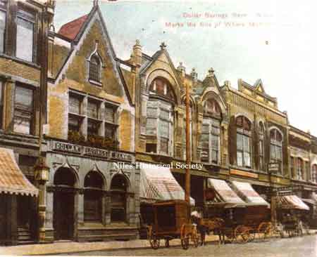

Ward-Thomas Museum


John C. Frech Home
Ward — Thomas
Museum
Home of the Niles Historical Society
503 Brown Street Niles, Ohio 44446
Click here to become a Niles Historical Society Member or to renew your membership
Click on any photograph to view a larger image, click on image again to zoom into photograph.
|
John C. Frech Residence. PO1.436 |
Frech Residence John C. Frech of Bavaria was one of the earliest and most successful proponents of free enterprise in Niles. He came to Lancaster, Pennsylvania from his native land and then to the Ohio where he settled on the fertile lands of this valley. He married a Miss Borts of Greenville, Pennsylvania and they reared 12 children, among them George Frech, Director of the Home Savings and Loan Association. He was born in the house directly across from the McKinley Memorial which was removed recently for urban renewal. The house was a Victorian square with 12 large rooms, great heavy cornices and porches across the front and sides. John Frech was a dealer in livestock and owned
the Frech Markets and the Hartzell slaughterhouse. He owned a
grist mill and the land on which the Dollar Bank is now located.
He also owned a farm and the water rights along the Meander Reservoir. |
|
The new location of the Dollar Bank on the southeast corner of Main Street and Park Avenue prior to the new bank building. PO1.912 |
When Henry Stevens wanted to buy the land for a bank, he asked John Frech how he wished to be paid and Frech replied, “In gold!” So the $10,000 purchase price was handed over
in gold coin in a valise. Frech also kept receipts from his markets
in the same manner.
|
South Main Street August 1, 1976 - mixes the old with the new. H.R. Block Income tax and the Men & Boys Shop are in the Grand Saloon Bldg. The building where Caramella's Ice Cream Parlor was located was torn down in the 1960's. The next two buildings. replaced the wooden W. Morrall store and the bakery were built about 1920. The new Theis drug store can be seen, built in 1976 as part of the urban renewal. In the foreground is the Dollar Savings Bank, built on that corner in 1918. PO1.39 |
 |
In 1905 the Dollar Bank purchased the City National Bank building which had been built in 1893 on part of the site of the McKinley home. The Dollar Bank remained at the location until 1918 when their present building was completed. The McKinley Federal Savings & Loan purchased the building that same year. The other buildings were the Bendict building, the bank, the Clingan Building., the Deither-Carter Building and the Holeton Building. PO1.38 |
|
|
|
||
{kind=link}
{kind=link}
{kind=link}
{kind=link}